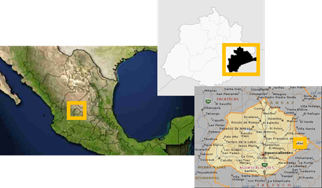

Posicionamiento
Georreferenciar: Es definir el lugar en que se encuentra un objeto dentro del espacio físico, para hacer esto utilizamos un sistema de coordenadas o una proyección geografica. En un sistema de coordenadas se utilizan número a los que se llaman así.
Clave geo-estadística del municipio del Llano
La georreferenciación nos puede ayudar a ubicar con presición en un lugar en la Tierra.